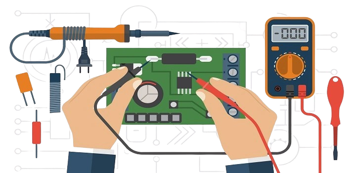

¡Te invitamos a aprender un poco más de este innovador diseño electrónico!
Descargar El Instrumento Virtual XYZ es una innovadora herramienta diseñada para medir los parámetros clave del Mosfet de la carga electrónica, como lo son la tensión, corriente y temperatura. Equipado con controladores PID dedicados, este sistema asegura una regulación estable y precisa de la corriente bajo cualquier condición de operación del dispositivo.
En su núcleo, el instrumento utiliza el microcontrolador Blue Pill (STM32F103C8T6) para la adquisición de datos, mientras que el procesamiento de la información y la interfaz gráfica se gestionan a través de software realizado en Qt, lo que permite una experiencia de usuario intuitiva y eficiente.
El Instrumento Virtual XYZ es compatible con PC, y puede conectarse fácilmente a Windows 10 o superior mediante un puerto USB. Se recomienda contar con al menos 8 GB de RAM.